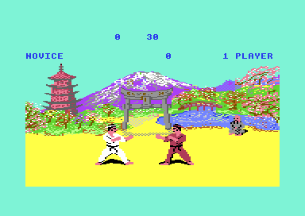

<meta charset="utf-8">
<meta name="viewport" content="width=device-width, initial-scale=1">
<title>{{title}}</title>
<link rel="preconnect" href="https://fonts.googleapis.com">
<link rel="stylesheet" href="https://fonts.googleapis.com/css2?family=Lato:wght@400;700;900&family=IBM+Plex+Mono:wght@400;500&display=swap">
<link rel="stylesheet" href="reference/fist-page.css">
<!-- tabs -->
<header class="hero">
  <p class="eyebrow">{{platform}} · {{year}} · {{publisher}}</p>
  <h1>{{title}}</h1>
  <p class="sub">A one-on-one karate game from 1985 whose fighters are assembled pose by pose from 255 cut-out pieces and scored by how far apart they stand when a blow lands.</p>
</header>
<main class="wrap">
<section id="game">
  <p class="fig">01 · The game</p>
  <h2 class="t">Two fighters, half a minute and a yin-yang for every clean blow</h2>
  <p>Way of the Exploding Fist is a one-on-one karate game. Two fighters face each other on a field in front of a painted backdrop, one in white and one in red. A joystick gives eighteen movements: walking, a crouch, a jump, two somersaults, a turn, punches and kicks. A blow that lands earns half a yin-yang symbol or a whole one, and four halves win the bout. When the clock runs out first, the judge seated in the backdrop decides.</p>
  <p>Alone, the player climbs from Novice to tenth dan against a computer opponent that grows quicker with every rank, and after a rank cleared in front of the Buddha a bull charges across the screen. Two players fight four bouts, one in front of each backdrop, on points.</p>
  <figure class="overview-shot"><figcaption>The start of a one-player bout at Novice, captured in an emulator.</figcaption></figure>
  <p class="overview-links"><a href="mechanics.html">How it works</a><a href="levels.html">The backdrops</a><a href="music.html">Music and speech</a><a href="discoveries.html">Discoveries</a></p>
</section>

<section id="makers">
  <p class="fig">02 · The makers</p>
  <h2 class="t">A Beam Software game for Melbourne House</h2>
  <p>The game names nobody on screen. Beam Software, the Melbourne studio that worked for Melbourne House, wrote it, and Melbourne House published it in 1985. Secondary sources credit the design to Gregg Barnett, the programming to Gregg Barnett and David Johnston, the graphics to Greg Holland and the music to Neil Brennan. Those credits were read on 2 October 2026 in search summaries of the <a href="https://www.c64-wiki.com/wiki/The_Way_of_the_Exploding_Fist">C64-Wiki</a> and <a href="https://en.wikipedia.org/wiki/The_Way_of_the_Exploding_Fist">Wikipedia</a> articles, not in the pages themselves, and should be checked against them.</p>
  <p>Gregg Barnett went on to write the sequel, Fist II: The Legend Continues, which has its own pages on this site. The two programs share a handful of tables byte for byte, among them the table that mirrors a sprite to turn a fighter round and the music's note frequencies, but a byte-for-byte comparison found little else in common.</p>
</section>

<section id="reception">
  <p class="fig">03 · Reception</p>
  <h2 class="t">The best-selling computer game of 1985 in Britain</h2>
  <p>The game sold. Gallup, which compiled the weekly charts for <i>Popular Computing Weekly</i>, put it at the top of its 1985 list across all machines, ahead of the charity compilation <i>Soft Aid</i> and Acornsoft's <i>Elite</i> (<a href="https://archive.org/details/popular-computing-weekly-1986-03-20/page/n3"><i>Popular Computing Weekly</i>, 20 March 1986</a>); <a href="https://en.wikipedia.org/wiki/The_Way_of_the_Exploding_Fist">Wikipedia</a>, citing the charts in <i>Computer and Video Games</i>, has it at number one in September and October 1985. Readers of <i>Computer and Video Games</i> voted it Game of the Year in the Golden Joysticks for 1985, and Melbourne House Software House of the Year (<a href="https://archive.org/details/Computer_Video_Games_Issue_055_1986-05_EMAP_Publishing_GB"><i>C+VG</i> 55, May 1986</a>). Looking back on Beam Software in 1997, <a href="https://archive.org/details/NEXT_Generation_33/page/n117"><i>Next Generation</i></a> put its sales at 500,000 copies across Europe.</p>
  <p>The Commodore 64 reviews were as warm. <a href="https://archive.org/details/zzap64-magazine-004/page/n29/mode/2up"><i>Zzap!64</i></a> made it a Sizzler in its August 1985 issue, at 93% overall. Its reviewers called it a version of the arcade game <i>Karate Champ</i>, praised the size of the fighters and the "excellent attention to detail" of their animation, and found the computer opponent "intelligent and tough to beat" at the higher ranks. They liked the music's oriental flavour and the "bone crunching" noises of a blow landing, though one thought the fighters' screams "a little crude"; those are the samples the <a href="music.html#speech">Music and speech</a> tab plays. Melbourne House told the magazine that the animation used over 600 sprite images. The program keeps 255 pieces of fighter, which it fits together nine at a time into 59 poses (<a href="mechanics.html#fighters">How it works</a>).</p>
  <p>In the United States the game came out on a new label, UXB, as <i>Kung Fu: The Way of the Exploding Fist</i>, at $29.95 on disk. Arnie Katz, reviewing it for <a href="https://archive.org/details/ahoy-magazine-28/page/n47/mode/1up"><i>Ahoy!</i></a> in April 1986, placed it "midway between the cinematic treatment of <i>Karateka</i> and the battle-oriented stance of <i>Karate Champ</i>", noted that it could get noisy enough for the switch that turns the shouts off to be welcome, and called it "an excellent start for a new software label" with "a good balance of action and strategy". It went on being remembered: Wikipedia records <i>GamesMaster</i> placing it 76th in a list of the hundred best games of all time in 1996.</p>
</section>
</main>
<footer style="margin:16px 0 0;padding:22px var(--gx) 0;border-top:1px solid #e0ded8;font-family:'IBM Plex Mono',ui-monospace,Menlo,monospace;font-size:12px;color:#80838a"><a href="https://github.com/gamesexplained/gamesexplained" aria-label="GitHub" style="display:inline-flex;align-items:center;justify-content:center;width:26px;height:26px;margin-left:8px;border:1px solid #e0ded8;border-radius:7px;background:#ffffff;color:#80838a;vertical-align:middle"><svg width="15" height="15" viewBox="0 0 24 24" fill="currentColor" aria-hidden="true"><path d="M12 .297c-6.63 0-12 5.373-12 12 0 5.303 3.438 9.8 8.205 11.385.6.113.82-.258.82-.577 0-.285-.01-1.04-.015-2.04-3.338.724-4.042-1.61-4.042-1.61C4.422 18.07 3.633 17.7 3.633 17.7c-1.087-.744.084-.729.084-.729 1.205.084 1.838 1.236 1.838 1.236 1.07 1.835 2.809 1.305 3.495.998.108-.776.417-1.305.76-1.605-2.665-.3-5.466-1.332-5.466-5.93 0-1.31.465-2.38 1.235-3.22-.135-.303-.54-1.523.105-3.176 0 0 1.005-.322 3.3 1.23.96-.267 1.98-.399 3-.405 1.02.006 2.04.138 3 .405 2.28-1.552 3.285-1.23 3.285-1.23.645 1.653.24 2.873.12 3.176.765.84 1.23 1.91 1.23 3.22 0 4.61-2.805 5.625-5.475 5.92.42.36.81 1.096.81 2.22 0 1.606-.015 2.896-.015 3.286 0 .315.21.69.825.57C20.565 22.092 24 17.592 24 12.297c0-6.627-5.373-12-12-12"/></svg></a><a href="https://discord.gg/3V9GWyRDWV" aria-label="Discord" style="display:inline-flex;align-items:center;justify-content:center;width:26px;height:26px;margin-left:8px;border:1px solid #e0ded8;border-radius:7px;background:#ffffff;color:#80838a;vertical-align:middle"><svg width="15" height="15" viewBox="0 0 24 24" fill="currentColor" aria-hidden="true"><path d="M20.317 4.3698a19.7913 19.7913 0 00-4.8851-1.5152.0741.0741 0 00-.0785.0371c-.211.3753-.4447.8648-.6083 1.2495-1.8447-.2762-3.68-.2762-5.4868 0-.1636-.3933-.4058-.8742-.6177-1.2495a.077.077 0 00-.0785-.037 19.7363 19.7363 0 00-4.8852 1.515.0699.0699 0 00-.0321.0277C.5334 9.0458-.319 13.5799.0992 18.0578a.0824.0824 0 00.0312.0561c2.0528 1.5076 4.0413 2.4228 5.9929 3.0294a.0777.0777 0 00.0842-.0276c.4616-.6304.8731-1.2952 1.226-1.9942a.076.076 0 00-.0416-.1057c-.6528-.2476-1.2743-.5495-1.8722-.8923a.077.077 0 01-.0076-.1277c.1258-.0943.2517-.1923.3718-.2914a.0743.0743 0 01.0776-.0105c3.9278 1.7933 8.18 1.7933 12.0614 0a.0739.0739 0 01.0785.0095c.1202.099.246.1981.3728.2924a.077.077 0 01-.0066.1276 12.2986 12.2986 0 01-1.873.8914.0766.0766 0 00-.0407.1067c.3604.698.7719 1.3628 1.225 1.9932a.076.076 0 00.0842.0286c1.961-.6067 3.9495-1.5219 6.0023-3.0294a.077.077 0 00.0313-.0552c.5004-5.177-.8382-9.6739-3.5485-13.6604a.061.061 0 00-.0312-.0286zM8.02 15.3312c-1.1825 0-2.1569-1.0857-2.1569-2.419 0-1.3332.9555-2.4189 2.157-2.4189 1.2108 0 2.1757 1.0952 2.1568 2.419 0 1.3332-.9555 2.4189-2.1569 2.4189zm7.9748 0c-1.1825 0-2.1569-1.0857-2.1569-2.419 0-1.3332.9554-2.4189 2.1569-2.4189 1.2108 0 2.1757 1.0952 2.1568 2.419 0 1.3332-.946 2.4189-2.1568 2.4189Z"/></svg></a><br>© Games Explained contributors. Write-ups, facts and symbol maps are available under <a href="https://creativecommons.org/licenses/by-sa/4.0/" style="color:#1f5fa8;text-decoration:none">CC BY-SA 4.0</a>; code under <a href="https://opensource.org/licenses/MIT" style="color:#1f5fa8;text-decoration:none">MIT</a></footer>
